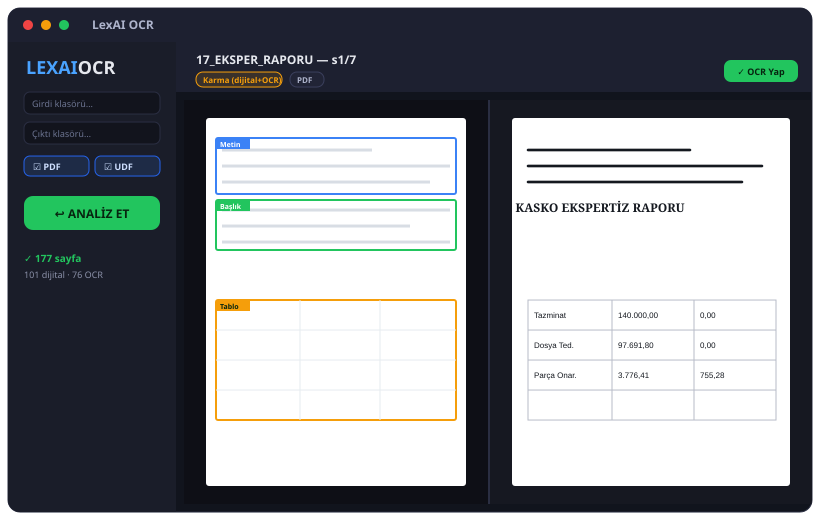
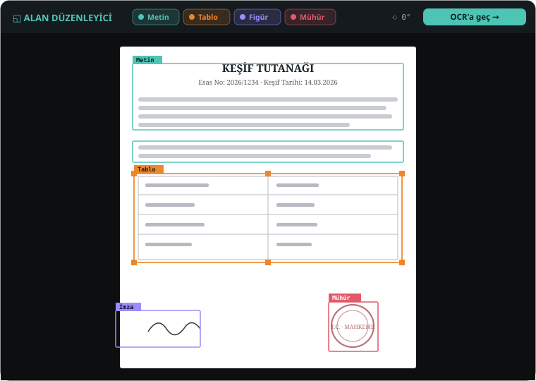
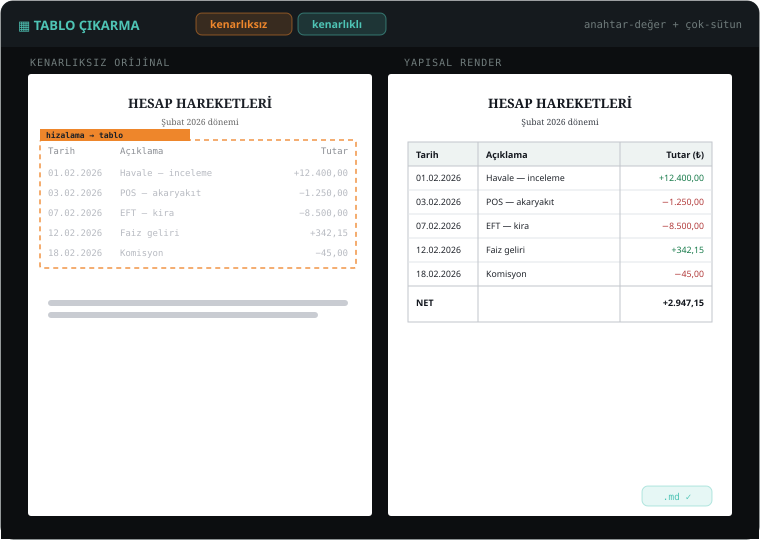

LexAI, hukuk/adli belgelerinizi (UYAP UDF, PDF, görsel, Office) buluta hiçbir veri göndermeden, cihazınızda OCR'lar. Native C++ TensorRT motoru; temiz dijital metni OCR'sız çıkarır, taramayı OCR'lar, tabloları yapısıyla alır ve yan-yana inceleme ile orijinaline yakın çıktı verir.

Kimler için
Gizlilik kritik, hacim yüksek, biçim karışık — LexAI bu üçünü birden yerelde çözer.
Dava dosyalarındaki yüzlerce sayfayı (UDF + ek PDF/görsel) yerelde OCR'layıp raporlanabilir metne çevirin.
UYAP UDF, dekont, eksper raporu, poliçe gibi belgeleri arayüzde inceleyip yapısıyla çıkarın.
Veri-güvenliği nedeniyle buluta gönderilemeyen evrakı tamamen çevrimdışı işleyin.
Nasıl çalışır
LexAI her sayfanın dijital mi tarama mı olduğuna kendi karar verir; gereksiz OCR yapmaz, gerekeni yüksek kalitede yapar.
Gömülü metni doğrudan, konumuyla çıkarır (PDF/UDF/Office). OCR hatası riski olmadan, anında.
Native C++ TensorRT motoru; yön düzeltme, yoğun sayfada şerit-tiling ile satır kaybı olmadan.
Dijital metni korur, sayfadaki gömülü foto/mühür/imzayı OCR'lar; ikisini konumuyla birleştirir.
UDF ana metni + ekleri; Office belgeleri; tek tek görseller — hepsi tek akışta.
Yan-yana inceleme
Her sayfayı orijinaliyle (tespit kutuları) ve konumlu render'ıyla yan yana görürsünüz; zoom/pan, blok vurgulama, tek-sayfa sığdırma ile her ayrıntıyı denetlersiniz.
ABBYY-tarzı inceleme
İki fazlı akış: önce yön + alanlar (zone) tespit edilir, siz düzeltir/onaylar, sonra OCR çalışır. Zone editörü ile alan ekler, türünü değiştirir, Ctrl+Z/Y ile geri/ileri alırsınız.

Tablo çıkarma
Banka dekontu, eksper raporu, poliçe gibi tablolu belgelerde hücreleri konumu, fontu ve gölgesiyle yeniden kurar; çizgisiz hizalı tabloları bile metin hizasından yakalar.

Kullanım
Tek installer; her şey içinde. İlk açılışta TensorRT motoru GPU'nuza göre bir kez hazırlanır.
Tek installer'ı çalıştır, sözleşmeyi kabul et, Program Files'a kur.
Dava dosyaları klasörünü seç (PDF/UDF/görsel/Office).
Yön + alanlar tespit edilir; tür filtreleriyle gözden geçirirsin.
Yan yana orijinal/render; gerekirse alan/yön düzelt.
Onayla → metin + tablo + .md çıktısı üretilir.
Neden LexAI
Belgeler cihazdan çıkmaz; işlem tamamen yereldir. Adli delil için tasarlandı.
Native C++ motor; sıcak/kalıcı engine, dijital sayfa OCR'sız.
Kenarlıklı + kenarlıksız tabloları konumlu hücrelerle çıkarır.
UDF, PDF, görsel, Office — tek akış, tür filtresi/gruplama.
Açılışta/tepside yeni sürümü görür; toast verir, doğrulayıp kurar.
Arka planda tepside bekler; kapatınca motoru bırakır (VRAM boşalır).
Güvenlik & gizlilik
Belge içeriği hiçbir zaman dışarı gönderilmez. Yalnız lisans ve güncelleme için anonim kontrol yapılır.
Sık sorulanlar
Hayır. Tüm işlem cihazınızda yereldir; belge içeriği dışarı çıkmaz. Yalnızca lisans doğrulama ve güncelleme kontrolü için anonim teknik bilgi (makine kimliği özeti, sürüm) iletilir.
Windows 10/11 (64-bit) ve güncel sürücülü bir NVIDIA GPU. İlk açılışta TensorRT motoru GPU'nuza göre bir kez hazırlanır (birkaç dakika). ~6 GB boş disk önerilir.
Evet. UDF (UYAP) dosyalarının ana metnini ve eklerini (PDF/görsel) işler; her sayfa için dijital mi tarama mı kararını otomatik verir.
Beta sürüm henüz Authenticode sertifikasıyla imzalı olmadığından Windows SmartScreen uyarı gösterebilir: Daha fazla bilgi → Yine de çalıştır. İndirdiğiniz kurulum, resmî LexAI dağıtım kaynağından gelir.
LexAI lisanslı bir deneme sürümüdür; lisans makinenize bağlıdır (kopyalanamaz). İlk açılışta çevrimiçi doğrulanır (internet gerekir). Lisansınız yoksa/deneme dolmuşsa uygulama size bir LEXAI-XXXX-XXXX kodu gösterir — bu kodu bize iletin.
Hayır. LexAI bağımsız, üçüncü taraf bir uygulamadır; T.C. Adalet Bakanlığı (UYAP) ile resmî bir bağlantısı yoktur. "UYAP", "UDF" ve anılan diğer ürün/marka adları sahiplerine aittir.
Windows 10/11 (x64) · NVIDIA GPU + güncel sürücü · ~6 GB boş disk gerekir.
"Bilinmeyen yayıncı" uyarısında Daha fazla bilgi → Yine de çalıştır · İndirip kurarak Kullanım Sözleşmesi'ni (EULA) kabul edersiniz · yazılım "olduğu gibi" sunulur.
İletişim
GilTec · lisans kodunuzla birlikte bize ulaşın.